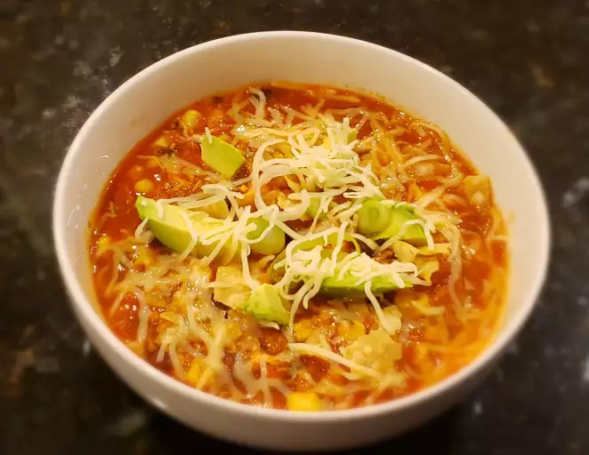

Chicken Tortilla Soup

Recipe Description
This chicken tortilla soup with shredded chicken, black beans, and corn is quick to make, full of flavor, and very filling! It's garnished with chopped fresh avocado, Monterey Jack cheese, crushed tortilla chips, and green onion. This soup freezes well.
If you're looking for a hearty and filling soup that will satisfy your Mexican food craving, then look no further. This chicken tortilla soup is the perfect comfort food that offers both spicy, Mexican-flair and hearty ingredients that will keep you full and happy.
Everyone will be slurping up this soup by the bowlful — so be prepared to make the tasty recipe again and again.
Ingredients
- 1 tablespoon olive oil
- 1 medium onion, chopped
- 3 cloves garlic, minced
- 1 (28 ounce) can crushed tomatoes
- 1 (10.5 ounce) can condensed chicken broth
- 1 1/4 cups water
- 2 teaspoons chili powder
- 1 teaspoon dried oregano
- 1 (15 ounce) can black beans, rinsed and drained
- 2 large boneless chicken breast halves, cooked and cut into bite-sized pieces
- 1 cup whole corn kernels, cooked
- 1 cup white hominy
- 1 (4 ounce) can chopped green chile peppers
- 1/4 chopped fresh cilantro
- 1/2 cup crushed tortilla chips, or to taste
- 2 medium avocados, sliced, or to taste
- 1/2 cup shredded Montery Jack cheese, or to taste
- 2 tablespoons chopped green onions, or to taste